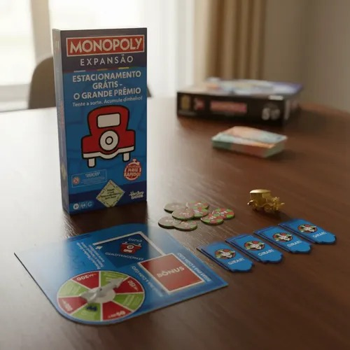
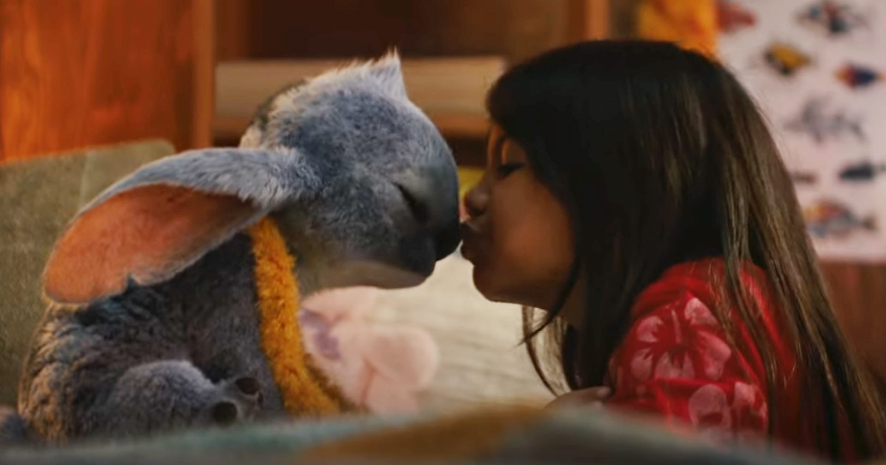
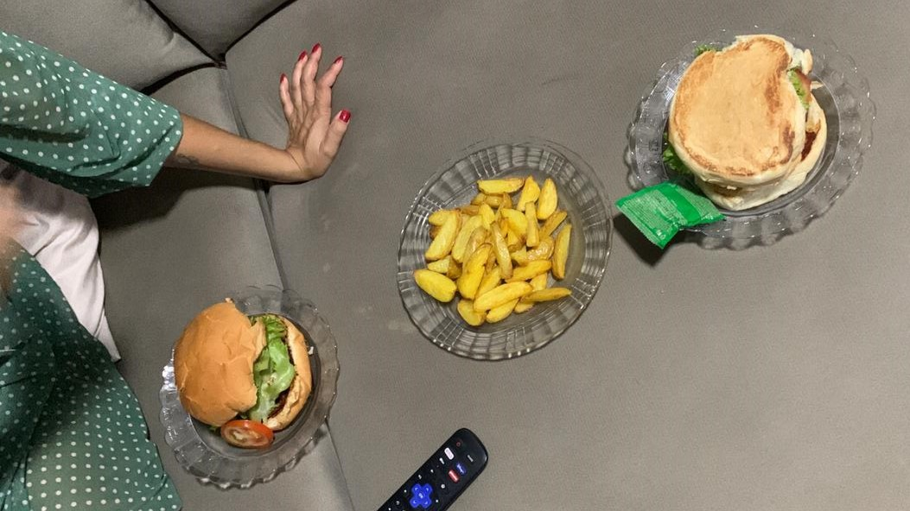
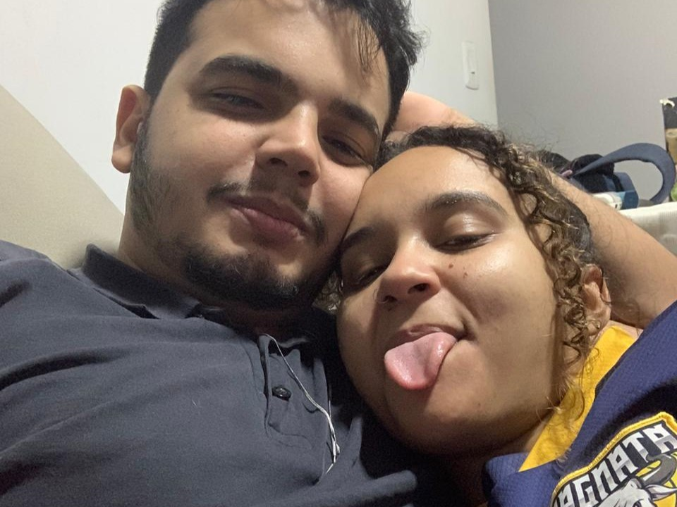

Arrasta para o lado para navegar pela nossa história...
Lembra de quando fomos para uma partida casual de Monopoly? Foi quando te vi chegar que percebi que a minha vida nunca mais seria a mesma...

Não havia passado nem uma semana, e lá estávamos nós, na sua casa deitados, assistindo Lilo e Stitch, A Princesa e o Sapo, A Bela e a Fera... O início da nossa própria magia.

O fim de semana em que inventamos de fazer comidas novas! Cozinhando contigo, adivinhando o que era uma colher de sopa de manteiga, varias risadas e bagunça na cozinha tornou-se um dos meus momentos favoritos.

Os nossos momentos favoritos não precisam de muito. Ficar deitados, conversando sobre nós, historias e aventuras, desenhando mentalmente o nosso futuro... É nesse momento que me sinto em casa.

Este mapa continua em construção todos os dias. Mal posso esperar pelos próximos capítulos, quilómetros e todas as curvas da nossa jornada juntos... E uma futura surpresinha... !